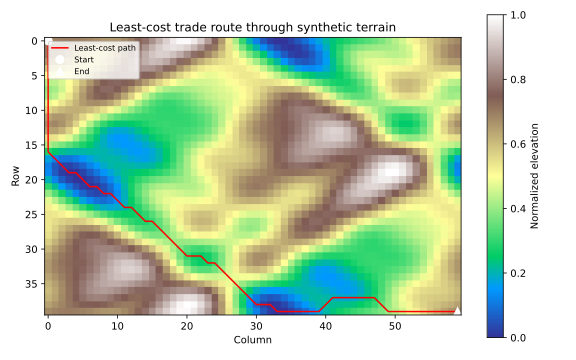

Least-Cost Path Analysis for Trade Routes
The Problem
- Modern roads follow valleys and passes because crossing ridges is slow and exhausting, and ancient routes did the same
- Landscape archaeology asks where historical travelers and traders were most likely to move through a terrain
- Least-cost path analysis formalises this idea
- Represent the terrain as a 2-D grid in which each cell has an elevation value
- Define a cost surface that translates elevation into travel difficulty
- Apply Dijkstra's algorithm to find the path from a source cell to a destination cell that minimises the total accumulated cost
- Visualize the terrain and overlay the optimal route
Why does least-cost path analysis assign lower cost to valley cells than to ridge cells?
- Because valleys are always closer to water sources.
- Wrong: proximity to water is a separate consideration that is not part of the elevation-based cost model used here.
- Because the model uses elevation as a proxy for travel effort: crossing
- high terrain requires more energy than traversing low terrain.
- Correct: the cost of an edge is proportional to the average elevation of its two endpoints, so paths that stay in valleys accumulate less cost than paths that cross ridges.
- Because valley cells are always larger on the grid.
- Wrong: all cells have the same size on a uniform grid; the cost difference comes from their elevation values, not their physical extent.
- Because Dijkstra's algorithm always prefers shorter paths.
- Wrong: Dijkstra's minimises accumulated cost, not geometric length; a longer valley path can beat a shorter ridge path if the valley cost is low enough.
The Cost Surface
- The elevation grid is a 2-D array with values normalised to $[0, 1]$
- 0 is the lowest point in the landscape, 1 is the highest
- Moving from cell $A$ to an adjacent cell $B$ incurs an edge cost:
$$\text{edge\_cost}(A, B) = \frac{\text{elev}(A) + \text{elev}(B)}{2} \times d(A, B)$$
- Averaging the endpoint elevations penalises entering a ridge from a valley proportionally (and vice versa).
- $d(A, B) = 1$ for orthogonal moves and $\sqrt{2}$ for diagonal moves, so longer edges cost proportionally more.
Cell A has elevation 0.5 and orthogonally adjacent cell B has elevation 1.0. What is the edge cost from A to B?
Generating Synthetic Terrain
- The terrain is a superposition of sinusoidal waves at four octaves
- Each successive octave has half the amplitude and twice the spatial frequency of the previous, producing a fractal-like surface of ridges and valleys
- The result is normalised to $[0, 1]$ so that cost surface values are comparable regardless of the raw wave amplitudes
def make_terrain(rows, cols, seed=SEED):
"""Return a (rows, cols) elevation array with values in [0, 1].
The terrain is a superposition of sinusoidal waves at four octaves.
Each octave has half the amplitude of the previous and twice the spatial
frequency, producing a fractal-like surface. Random per-octave phases
are seeded for reproducibility. The result is normalised so that the
minimum elevation is 0 and the maximum is 1; valleys appear dark and
ridges appear bright.
"""
rng = np.random.default_rng(seed)
x = np.linspace(0.0, 2.0 * np.pi, cols)
y = np.linspace(0.0, 2.0 * np.pi, rows)
X, Y = np.meshgrid(x, y)
elev = np.zeros((rows, cols))
for k in range(1, 5):
amp = 1.0 / k
px = rng.uniform(0.0, 2.0 * np.pi)
py = rng.uniform(0.0, 2.0 * np.pi)
elev += amp * np.sin(k * X + px) * np.cos(k * Y + py)
lo, hi = elev.min(), elev.max()
return (elev - lo) / (hi - lo)
Dijkstra's Algorithm on a Grid
- Dijkstra's algorithm maintains a priority queue of cells ordered by their current best-known distance from the source
- At each step it pops the cheapest cell, examines its eight neighbors, and updates any neighbor whose new cost would be lower than its current best
- When the destination is popped from the queue,
its accumulated cost is optimal
and the shortest-path tree stored in
prevcan be traced back to recover the route
def least_cost_path(elev, start, end):
"""Return the least-cost path through an elevation grid.
Returns a list of (row, col) pairs from start to end (inclusive).
The cost of traversing the edge from cell A to adjacent cell B is:
edge_cost = (elev[A] + elev[B]) / 2 * step_length
Averaging the endpoint elevations penalises ridges and rewards valleys.
Dijkstra's algorithm finds the path that minimises the total accumulated
cost from start to end.
"""
rows, cols = elev.shape
dist = np.full((rows, cols), np.inf)
prev = {}
dist[start] = 0.0
heap = [(0.0, start)]
while heap:
d, (r, c) = heapq.heappop(heap)
if (r, c) == end:
break
if d > dist[r, c]:
continue
for dr, dc in OFFSETS:
nr, nc = r + dr, c + dc
if not (0 <= nr < rows and 0 <= nc < cols):
continue
step = STEP_LEN[(dr, dc)]
edge = (elev[r, c] + elev[nr, nc]) / 2.0 * step
new_d = dist[r, c] + edge
if new_d < dist[nr, nc]:
dist[nr, nc] = new_d
prev[(nr, nc)] = (r, c)
heapq.heappush(heap, (new_d, (nr, nc)))
path = []
node = end
while node != start:
path.append(node)
node = prev[node]
path.append(start)
path.reverse()
return path
Order the steps of Dijkstra's algorithm as applied to this terrain grid.
Initialize all distances to infinity; set distance of start cell to 0 and push it onto the priority queue. Pop the cell with the lowest accumulated cost from the priority queue. For each unvisited neighbor, compute the edge cost and update distance if the new route is cheaper. Stop when the destination cell is popped; trace back through the predecessor map to recover the path.
Visualizing the Path
def plot_path(elev, path, filename):
"""Save a terrain map with the least-cost path overlaid as an SVG."""
fig, ax = plt.subplots(figsize=(8, 5))
im = ax.imshow(elev, cmap="terrain", origin="upper")
fig.colorbar(im, ax=ax, label="Normalized elevation")
rows_p = [r for r, c in path]
cols_p = [c for r, c in path]
ax.plot(cols_p, rows_p, color="red", linewidth=1.5, label="Least-cost path")
ax.plot(cols_p[0], rows_p[0], "wo", markersize=8, label="Start")
ax.plot(cols_p[-1], rows_p[-1], "w^", markersize=8, label="End")
ax.legend(loc="upper left", fontsize=8)
ax.set_title("Least-cost trade route through synthetic terrain")
ax.set_xlabel("Column")
ax.set_ylabel("Row")
fig.tight_layout()
fig.savefig(filename)
plt.close(fig)

Testing
- Terrain shape
make_terrain(rows, cols)must return an array of exactly that shape.- Terrain bounds
- After normalisation the minimum must be 0.0 and the maximum must be 1.0.
- Terrain reproducibility
- Calling
make_terraintwice with the same seed must return identical arrays. - Path endpoints
- The first cell of the returned path must equal
START; the last must equalEND. - Path connectivity
- Every consecutive pair of cells in the path must be 8-connected neighbors,
i.e., their offsets must appear in
STEP_LEN. - Flat terrain takes the diagonal
- On a uniform-elevation 5x5 grid, the cheapest route from $(0,0)$ to $(4,4)$ is the main diagonal (cost $4\sqrt{2} \approx 5.66$) rather than the 8-step orthogonal route (cost 8.0), so the path must visit exactly 5 cells.
- Valley preferred over ridge
- A 3x3 grid with a zero-elevation valley row in the middle must route the path through that row rather than across the high-elevation rows.
- Low-cost path beats ridge traverse
- On a 3x5 grid with an all-zero middle row, the Dijkstra path must cost strictly less than an all-ridge orthogonal traverse.
import numpy as np
import pytest
from generate_leastcost import make_terrain, GRID_ROWS, GRID_COLS, START, END
from leastcost import least_cost_path, STEP_LEN
def test_terrain_shape():
# Terrain must match the requested dimensions.
elev = make_terrain(10, 15)
assert elev.shape == (10, 15)
def test_terrain_bounds():
# After normalisation, minimum is 0 and maximum is 1.
elev = make_terrain(GRID_ROWS, GRID_COLS)
assert elev.min() == pytest.approx(0.0)
assert elev.max() == pytest.approx(1.0)
def test_terrain_reproducible():
# Same seed must always produce identical terrain.
elev1 = make_terrain(GRID_ROWS, GRID_COLS)
elev2 = make_terrain(GRID_ROWS, GRID_COLS)
assert np.array_equal(elev1, elev2)
def test_path_endpoints():
# Path must start at START and finish at END.
elev = make_terrain(GRID_ROWS, GRID_COLS)
path = least_cost_path(elev, START, END)
assert path[0] == START
assert path[-1] == END
def test_path_connected():
# Every consecutive pair of cells must be 8-connected neighbors.
elev = make_terrain(GRID_ROWS, GRID_COLS)
path = least_cost_path(elev, START, END)
for (r1, c1), (r2, c2) in zip(path, path[1:]):
assert (r2 - r1, c2 - c1) in STEP_LEN
def test_flat_terrain_diagonal():
# On a uniform-elevation 5x5 grid, the cheapest path from (0,0) to (4,4)
# is the main diagonal (4 diagonal steps, cost 4*sqrt(2) < 8 orthogonal steps).
elev = np.ones((5, 5))
path = least_cost_path(elev, (0, 0), (4, 4))
assert path[0] == (0, 0)
assert path[-1] == (4, 4)
# Diagonal path visits exactly 5 cells.
assert len(path) == 5
def test_valley_preferred():
# Three-row grid: rows 0 and 2 are high (elev=1), row 1 is a valley (elev=0).
# The path from (0,0) to (2,2) must pass through the valley to minimise cost.
elev = np.array(
[
[1.0, 1.0, 1.0],
[0.0, 0.0, 0.0],
[1.0, 1.0, 1.0],
]
)
path = least_cost_path(elev, (0, 0), (2, 2))
visited_rows = {r for r, c in path}
assert 1 in visited_rows
def test_low_cost_path_cheaper_than_ridge():
# On a 3x5 grid with a valley corridor in the middle row (elev=0) and
# high terrain everywhere else (elev=1), the least-cost path from
# (0,0) to (2,4) must cost strictly less than a direct ridge traverse.
# Ridge traverse (stay in rows 0 and 2) costs at least 4 orthogonal steps
# at (1+1)/2 = 1.0 each, for a total >= 4.0. Valley path dips into row 1
# where most edges cost (1+0)/2 or (0+0)/2, giving a much lower total.
elev = np.array(
[
[1.0, 1.0, 1.0, 1.0, 1.0],
[0.0, 0.0, 0.0, 0.0, 0.0],
[1.0, 1.0, 1.0, 1.0, 1.0],
]
)
path = least_cost_path(elev, (0, 0), (2, 4))
def total_cost(path):
return sum(
(elev[path[i]] + elev[path[i + 1]])
/ 2.0
* STEP_LEN[(path[i + 1][0] - path[i][0], path[i + 1][1] - path[i][1])]
for i in range(len(path) - 1)
)
# All-ridge orthogonal path (0,0)->(0,1)->(0,2)->(0,3)->(0,4)->(1,4)->(2,4)
# costs (1+1)/2 * 4 orthogonal + (1+0)/2 + (0+1)/2 = 4 + 0.5 + 0.5 = 5.0
ridge_cost = 5.0
assert total_cost(path) < ridge_cost
Least-cost path key terms
- Landscape archaeology
- A subfield of archaeology that studies how human activities are distributed across and shaped by the physical environment, including terrain, water, and vegetation; least-cost path analysis is one of its standard spatial methods
- Cost surface
- A 2-D grid in which each cell stores the difficulty of moving through that location; derived from elevation, slope, land cover, or other terrain attributes; used as input to path-finding algorithms
- Least-cost path
- The route through a cost surface that minimises the total accumulated cost from a source location to a destination; need not be the geometrically shortest path if shorter routes cross high-cost terrain
- Dijkstra's algorithm
- A graph search algorithm that finds shortest (or least-cost) paths from a source node to all other nodes by iteratively relaxing edges in order of increasing cost; runs in $O((V + E)\log V)$ time with a binary heap
- Edge cost (terrain)
- The cost assigned to moving from one grid cell to an adjacent cell; computed here as the average of the two cells' elevations times the step distance ($1$ for orthogonal, $\sqrt{2}$ for diagonal moves)
Exercises
Slope-based cost
Replace the elevation-averaging cost with a slope-based cost: the absolute elevation difference between the two cells divided by the step distance. Compare the resulting path to the elevation-average path. Does the slope cost prefer steeper or gentler routes?
Anisotropic cost
Historical travelers going downhill moved faster than travelers going uphill. Modify the edge cost so that moving to a lower cell costs less than moving to a higher cell (for example, multiply by a factor of 0.5 for downhill moves). How does the preferred route change?
Multiple waypoints
Extend least_cost_path to accept a list of waypoints and return the path
that passes through every waypoint in order at minimum total cost.
Apply this to the synthetic terrain with two intermediate waypoints and
compare the total cost to the direct source-to-destination path.
Sensitivity to epsilon
Generate terrain at three different random seeds and run least-cost path analysis on each. For each terrain, compute the total path cost and the fraction of cells on the path that lie below the mean elevation. Does a lower mean elevation on the path reliably predict lower total cost?